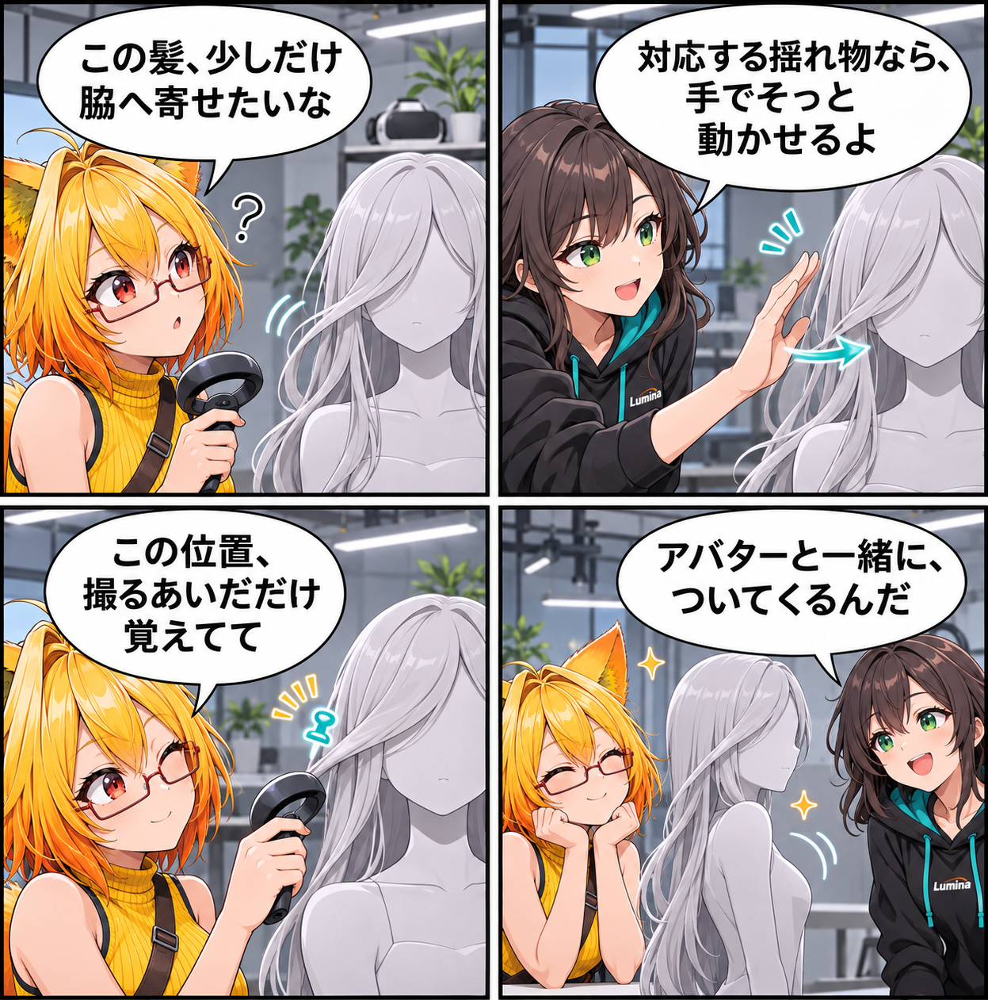

閑話休題：揺れた髪を、手元でそっと止める
新規実装の報告ではなく、VRASのVRモードにある揺れ物操作を紹介します。対応する髪、スカート、アクセサリーなどを手元からそっと整え、撮影や場面づくりの小さな調整へつなげられます。
main です。集計終了時点のHEADは c33733a41be121b814a1732df8c9eae089ace2ea、期間内コミットは0件でした。Assets/Scenes/MainScene.unity の未コミット差分は、期間内に実装された事実を確定できないため実績には含めていません。
手元で、少しだけ整えたいとき
VRモードでは、手のColliderを通じて、対応する髪、スカート、アクセサリーなどの揺れ物へ穏やかに干渉できます。大きく形を変えるためではなく、前髪を顔の脇へ寄せる、衣装や飾りの見え方を落ち着かせる、といった場面づくりのための小さな手助けです。
掴んでいる間と、離したあと
対応する物理粒子を見つけると、掴んでいる間はコントローラー位置へ留められます。固定モードでは、手を離したあともアバターのRootから見た相対位置として保持します。アバター全体を移動しても、整えた揺れ物だけが世界に置き去りにならない考え方です。
アバターごとに、できる範囲を見ながら
VRASではNative PhysBoneと互換物理の経路を扱います。ただし、すべての髪、スカート、アクセサリーが同じように操作できることや、VRC PhysBone、VRChat Clientとの完全な一致は保証しません。取り込んだアバターの構成に合わせて、使える範囲を確かめながら扱います。
今回の紹介範囲
これは現行実装の紹介です。当日に新しく実装・検証完了したことや、すべてのアバターでの動作を示すものではありません。
4コマの話
ろひは撮影前に、顔へかかった髪をほんの少しだけ寄せたくなります。ルミナは対応する揺れ物を手元で整え、固定した位置がアバターと一緒についてくる仕組みを見せます。最後は、整った一枚を二人で眺めました。
まとめ
VRASのVR揺れ物操作は、対応する髪、スカート、アクセサリーなどを手元からそっと整え、必要に応じてアバターと一緒に位置を保つ既存機能です。アバターごとの構成と対応範囲を確認しながら、撮影や演出の細部を整えられます。